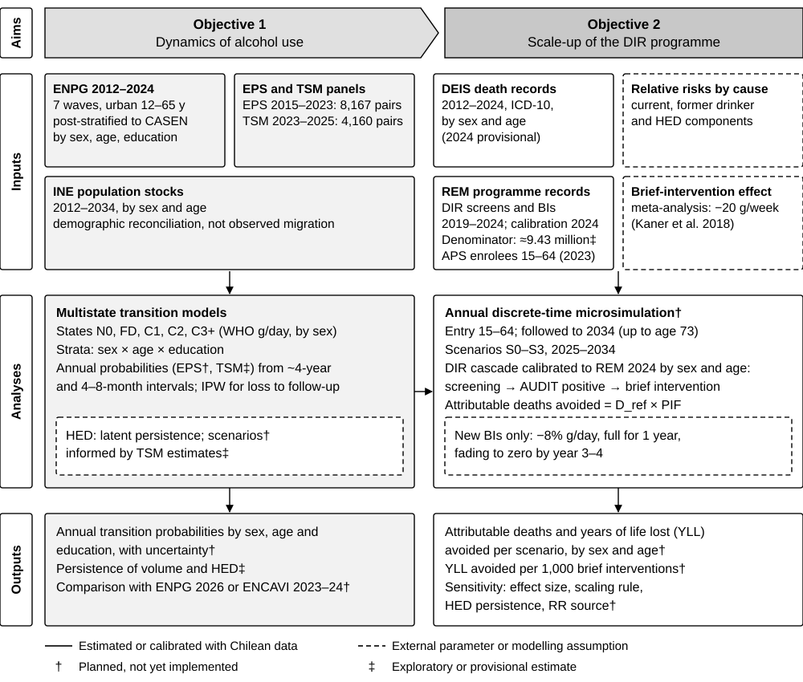

This repository brings together a focused branch of the wider project: analyses of persistence and transitions, replications and extensions of alcohol-attributable harm estimates, and inputs for a Chilean dynamic microsimulation. The work is organised below around three article strands.
The first and third titles are working manuscript titles. Linked reports document available analyses; their presence does not establish that a manuscript or the integrated simulation is complete.
Estimating Persistence and Transitions in Alcohol Consumption to Inform Microsimulation: A Longitudinal Analysis of Chilean Panel Data
EPS and TSM follow people over time and provide evidence on persistence and changes in alcohol consumption. ENPG supplies repeated population cross-sections for calibration. These sources have different observation intervals, age ranges and measurement constraints; ENPG alone does not identify individual transitions.
- EPS v4 (five states, latest): WHO categories, 2009 history and tail models — WHO borders without gaps, 12 g per drink, C3 and C4 merged, link tolerance ±3 years.
- TSM rounds 7–11 (v4, five states): transitions and comparison with EPS — complementary panel evidence, with its own measurement and design limitations.
- ENPG 2012–2024: microsimulation recalibration — the population-calibration bridge to the simulation prototype.
Supporting analyses: ELSOC transitions, 2016–2023 and ELSOC weighting scenarios.
Replicating JRT analyses and extending potential impact fractions
The expand_pif series brings together replication and harmonisation of José Antonio Ruiz-Tagle Maturana (JRT) and colleagues’ analyses. Version 2 extends the counterfactual scenarios to combined changes in alcohol volume and heavy episodic drinking (HED).
Reference articles
- Ruiz-Tagle Maturana, J., Román Mella, F., & Castillo-Carniglia, Á. (2026). Sex and age differences in alcohol-attributable mortality in Chile between 2008 and 2022. Public Health in Practice, 11, 100798.
- Ruiz-Tagle Maturana, J., Purshouse, R. C., & Castillo-Carniglia, Á. (2025). Potentially avoidable injury mortality and years of potential life lost through reduction of heavy episodic drinking in Chile. Listed as a manuscript submitted to Addiction in the parent project overview.
Analysis sequence
- expand_pif — exposure and attributable mortality: harmonised consumption inputs, alcohol-attributable fractions, deaths and years of potential life lost.
- expand_pif2 — PIF scenarios and combined effects: reductions in volume, HED and both together, with avoidable mortality and years of life lost.
- expand_pif3 — figures and tables: reporting and checks based on the upstream analysis outputs.
PIF scenarios describe counterfactual changes in harm. Their integration into an annual dynamic microsimulation is a separate step.
Projected Effects of Scaling Up Alcohol Screening and Brief Intervention on Alcohol-Attributable Mortality and Potential Years of Life Lost in Chile: A Dynamic Microsimulation Study
This strand will connect screening coverage, eligibility, brief-intervention delivery and changes in alcohol consumption to subsequent mortality and potential years of life lost. The longitudinal and calibration work supplies population dynamics; the attributable-harm work supplies the link from consumption to health outcomes.
- Project roadmap — mortality, policy counterfactuals, elasticity, simulation and their integration.
The roadmap supports model development; it does not constitute completed estimates of the effects of scaling up brief intervention. Intervention effects require their own evidence and parameters. Price elasticity belongs to the separate pricing-policy pathway.
Data, methods and reproducibility
Start with the repository README and environment setup. Source documentation is available for EPS, TSM, ENPG, ELSOC, DEIS and EPF. Microdata are stored as encrypted bundles; the reports linked here are rendered analysis outputs.
Microsimulation architecture reference: Kilian et al. (2025), Targeting alcohol use in high-risk population groups: a US microsimulation study of beverage-specific pricing policies; SIMAH implementation, release 0.1.1. Adaptation requires Chilean data and assumptions.
Proposed study design
The diagram brings together the planned analysis of alcohol-use dynamics and the proposed microsimulation of the DIR programme. Select it to view the full-size image.
